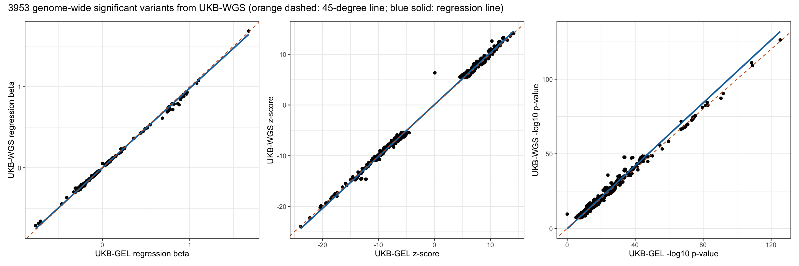
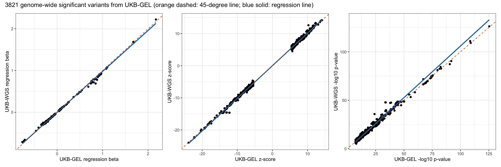
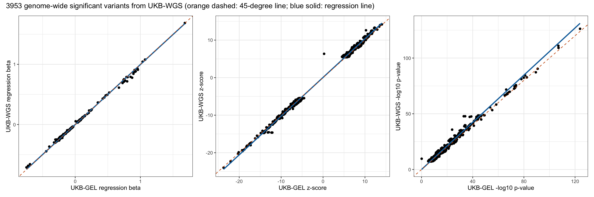
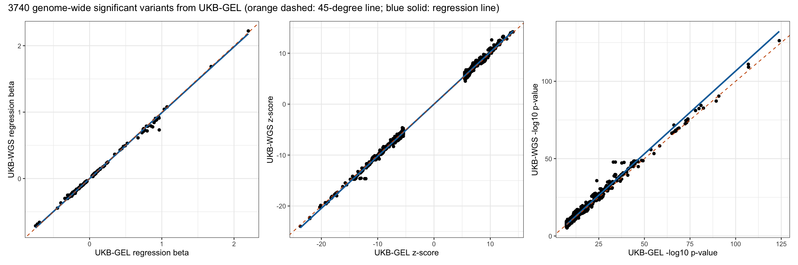

Last updated: 2025-07-23
Checks: 7 0
Knit directory: scratch/
This reproducible R Markdown analysis was created with workflowr (version 1.7.1). The Checks tab describes the reproducibility checks that were applied when the results were created. The Past versions tab lists the development history.
Great! Since the R Markdown file has been committed to the Git repository, you know the exact version of the code that produced these results.
Great job! The global environment was empty. Objects defined in the global environment can affect the analysis in your R Markdown file in unknown ways. For reproduciblity it’s best to always run the code in an empty environment.
The command set.seed(20250402) was run prior to running
the code in the R Markdown file. Setting a seed ensures that any results
that rely on randomness, e.g. subsampling or permutations, are
reproducible.
Great job! Recording the operating system, R version, and package versions is critical for reproducibility.
Nice! There were no cached chunks for this analysis, so you can be confident that you successfully produced the results during this run.
Great job! Using relative paths to the files within your workflowr project makes it easier to run your code on other machines.
Great! You are using Git for version control. Tracking code development and connecting the code version to the results is critical for reproducibility.
The results in this page were generated with repository version c7e85f1. See the Past versions tab to see a history of the changes made to the R Markdown and HTML files.
Note that you need to be careful to ensure that all relevant files for
the analysis have been committed to Git prior to generating the results
(you can use wflow_publish or
wflow_git_commit). workflowr only checks the R Markdown
file, but you know if there are other scripts or data files that it
depends on. Below is the status of the Git repository when the results
were generated:
Ignored files:
Ignored: .DS_Store
Ignored: .Rhistory
Ignored: .Rproj.user/
Note that any generated files, e.g. HTML, png, CSS, etc., are not included in this status report because it is ok for generated content to have uncommitted changes.
These are the previous versions of the repository in which changes were
made to the R Markdown
(analysis/compare_wgs_with_gel_b10.Rmd) and HTML
(docs/compare_wgs_with_gel_b10.html) files. If you’ve
configured a remote Git repository (see ?wflow_git_remote),
click on the hyperlinks in the table below to view the files as they
were in that past version.
| File | Version | Author | Date | Message |
|---|---|---|---|---|
| Rmd | c7e85f1 | Xiang Zhu | 2025-07-23 | compare wgs-based xiangzhu/brain2gene#14 with gel-based xiangzhu/brain2gene#2 results |
Number of rows in the new data frame: 71016466 Number of rows in the old data frame: 49215207 Number of genome-wide significant variants in the new GWAS: 4802 Number of genome-wide significant variants in the old GWAS: 3852 Number of GWAS loci in the new GWAS: 41 Number of GWAS loci in the old GWAS: 37 Total number of rows after joining two data frames: 46433853 Pearson correlation between new_A1FREQ in new and old_A1FREQ in old:
Estimate = 0.99987541 , 95% CI = [ 0.99987534 , 0.99987548 ]
Regression coefficients for new_A1FREQ (new ~ old):
Estimate Std. Error t value Pr(>|t|)
(Intercept) 7.560187e-06 3.903789e-07 19.36628 1.487326e-83
x 9.997967e-01 2.316283e-06 431638.49141 0.000000e+00
Pearson correlation between new_BETA in new and old_BETA in old:
Estimate = 0.88742256 , 95% CI = [ 0.88736143 , 0.88748366 ]
Regression coefficients for new_BETA (new ~ old):
Estimate Std. Error t value Pr(>|t|)
(Intercept) 0.000146049 1.669908e-05 8.745932 2.211891e-18
x 0.850367869 6.482153e-05 13118.602052 0.000000e+00
Pearson correlation between new_SE in new and old_SE in old:
Estimate = 0.98539428 , 95% CI = [ 0.98538593 , 0.98540262 ]
Regression coefficients for new_SE (new ~ old):
Estimate Std. Error t value Pr(>|t|)
(Intercept) 0.001315871 6.191780e-06 212.5191 0
x 0.949692359 2.408466e-05 39431.4256 0
Pearson correlation between new_CHISQ in new and old_CHISQ in old:
Estimate = 0.88464171 , 95% CI = [ 0.88457916 , 0.88470423 ]
Regression coefficients for new_CHISQ (new ~ old):
Estimate Std. Error t value Pr(>|t|)
(Intercept) 0.1068157 1.395649e-04 765.3479 0
x 0.8981135 6.946808e-05 12928.4350 0
Pearson correlation between new_LOG10P in new and old_LOG10P in old:
Estimate = 0.86329834 , 95% CI = [ 0.86322506 , 0.86337159 ]
Regression coefficients for new_LOG10P (new ~ old):
Estimate Std. Error t value Pr(>|t|)
(Intercept) 0.05737453 4.954541e-05 1158.019 0
x 0.87154731 7.477231e-05 11656.017 0
Pearson correlation between new_ZSCORE in new and old_ZSCORE in old:
Estimate = 0.91154188 , 95% CI = [ 0.91149323 , 0.91159051 ]
Regression coefficients for new_ZSCORE (new ~ old):
Estimate Std. Error t value Pr(>|t|)
(Intercept) 0.0001503285 6.154489e-05 2.442583 0.01458258
x 0.9119510164 6.037238e-05 15105.434593 0.00000000Pearson correlation between new_A1FREQ in new and old_A1FREQ in old:
Estimate = 0.99992181 , 95% CI = [ 0.99991678 , 0.99992654 ]
Regression coefficients for new_A1FREQ (new ~ old):
Estimate Std. Error t value Pr(>|t|)
(Intercept) 0.0001911179 8.108177e-05 2.357101 0.01846676
x 0.9996880689 1.988938e-04 5026.241633 0.00000000
Pearson correlation between new_BETA in new and old_BETA in old:
Estimate = 0.99928642 , 95% CI = [ 0.99924052 , 0.99932955 ]
Regression coefficients for new_BETA (new ~ old):
Estimate Std. Error t value Pr(>|t|)
(Intercept) -0.0002587173 8.359049e-05 -3.095057 0.001981524
x 0.9823616465 5.907258e-04 1662.974118 0.000000000
Pearson correlation between new_SE in new and old_SE in old:
Estimate = 0.99940704 , 95% CI = [ 0.99936889 , 0.99944288 ]
Regression coefficients for new_SE (new ~ old):
Estimate Std. Error t value Pr(>|t|)
(Intercept) 0.0002292073 8.259887e-06 27.74945 5.389079e-155
x 0.9468293844 5.189679e-04 1824.44675 0.000000e+00
Pearson correlation between new_CHISQ in new and old_CHISQ in old:
Estimate = 0.99637059 , 95% CI = [ 0.99613747 , 0.99658967 ]
Regression coefficients for new_CHISQ (new ~ old):
Estimate Std. Error t value Pr(>|t|)
(Intercept) -0.5281673 0.132864492 -3.975233 7.156705e-05
x 1.0535353 0.001431901 735.759670 0.000000e+00
Pearson correlation between new_LOG10P in new and old_LOG10P in old:
Estimate = 0.99632943 , 95% CI = [ 0.99609367 , 0.99655099 ]
Regression coefficients for new_LOG10P (new ~ old):
Estimate Std. Error t value Pr(>|t|)
(Intercept) -0.1484388 0.030193469 -4.916256 9.179818e-07
x 1.0529550 0.001439249 731.600207 0.000000e+00
Pearson correlation between new_ZSCORE in new and old_ZSCORE in old:
Estimate = 0.99918892 , 95% CI = [ 0.99913674 , 0.99923794 ]
Regression coefficients for new_ZSCORE (new ~ old):
Estimate Std. Error t value Pr(>|t|)
(Intercept) 0.06574455 0.0054955139 11.96331 1.996021e-32
x 1.02387690 0.0006564569 1559.70171 0.000000e+00Pearson correlation between new_A1FREQ in new and old_A1FREQ in old:
Estimate = 0.999938 , 95% CI = [ 0.99993394 , 0.99994181 ]
Regression coefficients for new_A1FREQ (new ~ old):
Estimate Std. Error t value Pr(>|t|)
(Intercept) 0.0001717851 6.719988e-05 2.556331 0.01061662
x 0.9996867789 1.801431e-04 5549.404469 0.00000000
Pearson correlation between new_BETA in new and old_BETA in old:
Estimate = 0.9991616 , 95% CI = [ 0.99910671 , 0.99921311 ]
Regression coefficients for new_BETA (new ~ old):
Estimate Std. Error t value Pr(>|t|)
(Intercept) -0.000717478 9.692812e-05 -7.402166 1.639284e-13
x 0.980383565 6.500342e-04 1508.203069 0.000000e+00
Pearson correlation between new_SE in new and old_SE in old:
Estimate = 0.99714175 , 95% CI = [ 0.99695483 , 0.99731721 ]
Regression coefficients for new_SE (new ~ old):
Estimate Std. Error t value Pr(>|t|)
(Intercept) -9.524695e-05 2.111434e-05 -4.511007 6.646043e-06
x 9.776679e-01 1.198710e-03 815.600034 0.000000e+00
Pearson correlation between new_CHISQ in new and old_CHISQ in old:
Estimate = 0.99660946 , 95% CI = [ 0.9963878 , 0.99681754 ]
Regression coefficients for new_CHISQ (new ~ old):
Estimate Std. Error t value Pr(>|t|)
(Intercept) -2.443461 0.134362769 -18.18555 6.109745e-71
x 1.065603 0.001423563 748.54640 0.000000e+00
Pearson correlation between new_LOG10P in new and old_LOG10P in old:
Estimate = 0.99658828 , 95% CI = [ 0.99636524 , 0.99679766 ]
Regression coefficients for new_LOG10P (new ~ old):
Estimate Std. Error t value Pr(>|t|)
(Intercept) -0.5891295 0.030461319 -19.34025 1.403716e-79
x 1.0653632 0.001427703 746.20802 0.000000e+00
Pearson correlation between new_ZSCORE in new and old_ZSCORE in old:
Estimate = 0.99921388 , 95% CI = [ 0.99916242 , 0.99926219 ]
Regression coefficients for new_ZSCORE (new ~ old):
Estimate Std. Error t value Pr(>|t|)
(Intercept) 0.007978918 0.0055313770 1.442483 0.1492481
x 1.015197231 0.0006517644 1557.613698 0.0000000 UKB-WGS p < 5e-8 UKB-WGS p >= 5e-8
UKB-GEL p < 5e-8 3451 370
UKB-GEL p >= 5e-8 502 46429530
Fisher's Exact Test for Count Data
data: contingency_table
p-value < 2.2e-16
alternative hypothesis: true odds ratio is not equal to 1
95 percent confidence interval:
8.402051e+03 4.503600e+15
sample estimates:
odds ratio
4.5036e+15 
Number of rows in the new data frame: 71016466 Number of rows in the old data frame: 49700936 Number of genome-wide significant variants in the new GWAS: 4802 Number of genome-wide significant variants in the old GWAS: 3771 Number of GWAS loci in the new GWAS: 41 Number of GWAS loci in the old GWAS: 38 Total number of rows after joining two data frames: 46797523 Pearson correlation between new_A1FREQ in new and old_A1FREQ in old:
Estimate = 0.99987504 , 95% CI = [ 0.99987497 , 0.99987511 ]
Regression coefficients for new_A1FREQ (new ~ old):
Estimate Std. Error t value Pr(>|t|)
(Intercept) 7.625293e-06 3.880181e-07 19.6519 5.573453e-86
x 9.997967e-01 2.310685e-06 432684.1949 0.000000e+00
Pearson correlation between new_BETA in new and old_BETA in old:
Estimate = 0.8807699 , 95% CI = [ 0.88070564 , 0.88083413 ]
Regression coefficients for new_BETA (new ~ old):
Estimate Std. Error t value Pr(>|t|)
(Intercept) 0.0001936637 1.714663e-05 11.29456 1.396126e-29
x 0.8518022697 6.694616e-05 12723.69081 0.000000e+00
Pearson correlation between new_SE in new and old_SE in old:
Estimate = 0.98490007 , 95% CI = [ 0.98489148 , 0.98490865 ]
Regression coefficients for new_SE (new ~ old):
Estimate Std. Error t value Pr(>|t|)
(Intercept) 0.001512851 6.290268e-06 240.5067 0
x 0.956867671 2.458697e-05 38917.6659 0
Pearson correlation between new_CHISQ in new and old_CHISQ in old:
Estimate = 0.87652212 , 95% CI = [ 0.87645571 , 0.87658849 ]
Regression coefficients for new_CHISQ (new ~ old):
Estimate Std. Error t value Pr(>|t|)
(Intercept) 0.1139705 1.434277e-04 794.6201 0
x 0.8933473 7.171623e-05 12456.6962 0
Pearson correlation between new_LOG10P in new and old_LOG10P in old:
Estimate = 0.85404739 , 95% CI = [ 0.85396984 , 0.8541249 ]
Regression coefficients for new_LOG10P (new ~ old):
Estimate Std. Error t value Pr(>|t|)
(Intercept) 0.0611323 5.086233e-05 1201.917 0
x 0.8645958 7.698145e-05 11231.223 0
Pearson correlation between new_ZSCORE in new and old_ZSCORE in old:
Estimate = 0.90568573 , 95% CI = [ 0.90563422 , 0.90573721 ]
Regression coefficients for new_ZSCORE (new ~ old):
Estimate Std. Error t value Pr(>|t|)
(Intercept) 0.0002903507 6.319561e-05 4.594476 4.338388e-06
x 0.9071850506 6.207565e-05 14614.185179 0.000000e+00Pearson correlation between new_A1FREQ in new and old_A1FREQ in old:
Estimate = 0.99992181 , 95% CI = [ 0.99991678 , 0.99992654 ]
Regression coefficients for new_A1FREQ (new ~ old):
Estimate Std. Error t value Pr(>|t|)
(Intercept) 0.0001911179 8.108177e-05 2.357101 0.01846676
x 0.9996880689 1.988938e-04 5026.241633 0.00000000
Pearson correlation between new_BETA in new and old_BETA in old:
Estimate = 0.99930616 , 95% CI = [ 0.99926153 , 0.9993481 ]
Regression coefficients for new_BETA (new ~ old):
Estimate Std. Error t value Pr(>|t|)
(Intercept) -0.0002026929 8.243292e-05 -2.458883 0.01397956
x 0.9968015698 5.910511e-04 1686.489682 0.00000000
Pearson correlation between new_SE in new and old_SE in old:
Estimate = 0.99939214 , 95% CI = [ 0.99935303 , 0.99942888 ]
Regression coefficients for new_SE (new ~ old):
Estimate Std. Error t value Pr(>|t|)
(Intercept) 0.0002253014 8.364513e-06 26.93539 7.425742e-147
x 0.9554024389 5.302106e-04 1801.93003 0.000000e+00
Pearson correlation between new_CHISQ in new and old_CHISQ in old:
Estimate = 0.99676493 , 95% CI = [ 0.9965571 , 0.99696025 ]
Regression coefficients for new_CHISQ (new ~ old):
Estimate Std. Error t value Pr(>|t|)
(Intercept) 0.1307004 0.124786063 1.047396 0.2949812
x 1.0591790 0.001358714 779.545144 0.0000000
Pearson correlation between new_LOG10P in new and old_LOG10P in old:
Estimate = 0.99671801 , 95% CI = [ 0.99650716 , 0.99691615 ]
Regression coefficients for new_LOG10P (new ~ old):
Estimate Std. Error t value Pr(>|t|)
(Intercept) -0.004737723 0.028403701 -0.1667995 0.8675363
x 1.058463535 0.001367657 773.9249291 0.0000000
Pearson correlation between new_ZSCORE in new and old_ZSCORE in old:
Estimate = 0.99918812 , 95% CI = [ 0.99913589 , 0.99923719 ]
Regression coefficients for new_ZSCORE (new ~ old):
Estimate Std. Error t value Pr(>|t|)
(Intercept) 0.0532632 0.0054962357 9.69085 5.779355e-22
x 1.0308550 0.0006612561 1558.93455 0.000000e+00Pearson correlation between new_A1FREQ in new and old_A1FREQ in old:
Estimate = 0.9999369 , 95% CI = [ 0.99993272 , 0.99994082 ]
Regression coefficients for new_A1FREQ (new ~ old):
Estimate Std. Error t value Pr(>|t|)
(Intercept) 0.0001763219 6.833806e-05 2.580142 0.009913792
x 0.9996872935 1.836956e-04 5442.087514 0.000000000
Pearson correlation between new_BETA in new and old_BETA in old:
Estimate = 0.99904525 , 95% CI = [ 0.99898206 , 0.99910453 ]
Regression coefficients for new_BETA (new ~ old):
Estimate Std. Error t value Pr(>|t|)
(Intercept) -0.0007954438 0.0001055572 -7.535668 6.05994e-14
x 0.9922414085 0.0007096894 1398.134724 0.00000e+00
Pearson correlation between new_SE in new and old_SE in old:
Estimate = 0.99729952 , 95% CI = [ 0.99712094 , 0.99746704 ]
Regression coefficients for new_SE (new ~ old):
Estimate Std. Error t value Pr(>|t|)
(Intercept) -8.752602e-05 2.093698e-05 -4.180452 2.975956e-05
x 9.853976e-01 1.186884e-03 830.238959 0.000000e+00
Pearson correlation between new_CHISQ in new and old_CHISQ in old:
Estimate = 0.99691688 , 95% CI = [ 0.99671304 , 0.9971081 ]
Regression coefficients for new_CHISQ (new ~ old):
Estimate Std. Error t value Pr(>|t|)
(Intercept) -1.744131 0.130061925 -13.4100 4.398615e-40
x 1.071036 0.001378798 776.7896 0.000000e+00
Pearson correlation between new_LOG10P in new and old_LOG10P in old:
Estimate = 0.99688764 , 95% CI = [ 0.99668187 , 0.99708067 ]
Regression coefficients for new_LOG10P (new ~ old):
Estimate Std. Error t value Pr(>|t|)
(Intercept) -0.4363372 0.029529905 -14.77611 4.625309e-48
x 1.0706604 0.001384866 773.11467 0.000000e+00
Pearson correlation between new_ZSCORE in new and old_ZSCORE in old:
Estimate = 0.9992368 , 95% CI = [ 0.99918628 , 0.99928419 ]
Regression coefficients for new_ZSCORE (new ~ old):
Estimate Std. Error t value Pr(>|t|)
(Intercept) -0.00527883 0.0055426330 -0.9524047 0.3409534
x 1.02223680 0.0006536029 1564.0028953 0.0000000 UKB-WGS p < 5e-8 UKB-WGS p >= 5e-8
UKB-GEL p < 5e-8 3396 344
UKB-GEL p >= 5e-8 557 46793226
Fisher's Exact Test for Count Data
data: contingency_table
p-value < 2.2e-16
alternative hypothesis: true odds ratio is not equal to 1
95 percent confidence interval:
8.402051e+03 4.503600e+15
sample estimates:
odds ratio
4.5036e+15 
R version 4.5.1 (2025-06-13)
Platform: aarch64-apple-darwin20
Running under: macOS Sequoia 15.5
Matrix products: default
BLAS: /Library/Frameworks/R.framework/Versions/4.5-arm64/Resources/lib/libRblas.0.dylib
LAPACK: /Library/Frameworks/R.framework/Versions/4.5-arm64/Resources/lib/libRlapack.dylib; LAPACK version 3.12.1
locale:
[1] en_US.UTF-8/en_US.UTF-8/en_US.UTF-8/C/en_US.UTF-8/en_US.UTF-8
time zone: America/Los_Angeles
tzcode source: internal
attached base packages:
[1] stats graphics grDevices utils datasets methods base
other attached packages:
[1] xzTools_0.0.0.9000 patchwork_1.3.1 ggplot2_3.5.2 dplyr_1.1.4
[5] data.table_1.17.8 workflowr_1.7.1
loaded via a namespace (and not attached):
[1] sass_0.4.10 generics_0.1.4 lattice_0.22-7 stringi_1.8.7
[5] digest_0.6.37 magrittr_2.0.3 evaluate_1.0.4 grid_4.5.1
[9] RColorBrewer_1.1-3 fastmap_1.2.0 Matrix_1.7-3 R.oo_1.27.1
[13] rprojroot_2.0.4 jsonlite_2.0.0 processx_3.8.6 R.utils_2.13.0
[17] whisker_0.4.1 ps_1.9.1 promises_1.3.3 httr_1.4.7
[21] mgcv_1.9-3 scales_1.4.0 jquerylib_0.1.4 cli_3.6.5
[25] rlang_1.1.6 R.methodsS3_1.8.2 splines_4.5.1 withr_3.0.2
[29] cachem_1.1.0 yaml_2.3.10 tools_4.5.1 httpuv_1.6.16
[33] vctrs_0.6.5 R6_2.6.1 lifecycle_1.0.4 git2r_0.36.2
[37] stringr_1.5.1 fs_1.6.6 pkgconfig_2.0.3 callr_3.7.6
[41] pillar_1.11.0 bslib_0.9.0 later_1.4.2 gtable_0.3.6
[45] glue_1.8.0 Rcpp_1.1.0 xfun_0.52 tibble_3.3.0
[49] tidyselect_1.2.1 rstudioapi_0.17.1 knitr_1.50 farver_2.1.2
[53] nlme_3.1-168 htmltools_0.5.8.1 labeling_0.4.3 rmarkdown_2.29
[57] compiler_4.5.1 getPass_0.2-4